ECO Receipt
Web app AI yang ringan untuk mengubah foto struk belanja — dalam hampir semua bahasa — menjadi jejak karbon, Skor Hijau, dan beberapa saran sederhana untuk belanja berikutnya.
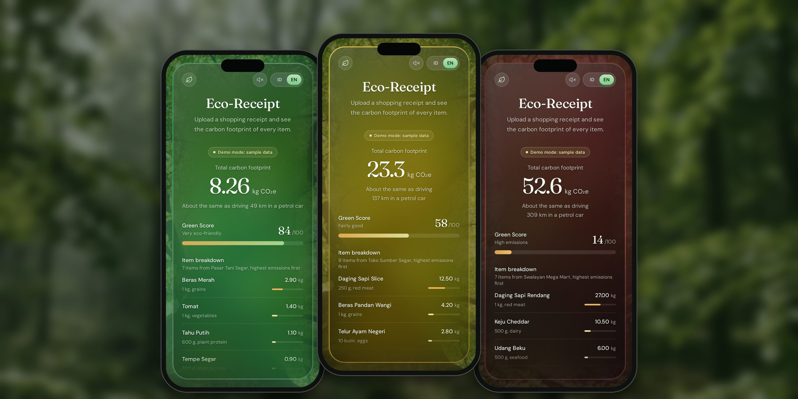
[Gambar cover]Dari struk yang kusut sampai kebiasaan yang lebih jelas — dalam satu foto.
Input AI tanpa repot
Foto atau unggah struk dalam hampir semua bahasa. Model vision Gemini membaca barangnya, melewati pajak dan kembalian, lalu memperkirakan CO₂e tiap barang.
Sadar dalam porsi kecil, bukan rasa bersalah
Emisi diterjemahkan jadi hal yang terasa dekat, seperti kilometer berkendara dengan mobil, plus dua atau tiga saran lokal untuk belanja berikutnya.
Antarmuka yang bereaksi
Skor tinggi menghadirkan suasana hijau yang tenang dengan kicau burung; skor rendah membuat layar merah gelap dengan petir dan asap.
Masalahnya
Kebanyakan orang tidak pernah mengaitkan belanja mingguan dengan emisi karbon. Pembicaraan iklim berpusat pada pabrik dan bahan bakar, sementara konsumsi sehari-hari diam-diam terus menumpuk. Tool GreenTech yang ada cenderung B2B — integrasi kasir, donasi pembulatan, pencarian manual — sehingga pembeli sehari-hari tidak punya cara sederhana untuk melihat berapa "biaya" satu keranjang belanja bagi bumi.
Pembeli tidak bisa melihatnya
- Struk mencantumkan semua harga, tapi tidak pernah karbonnya
- Pembicaraan iklim berpusat pada pabrik dan bahan bakar, bukan keranjang belanja
- Tool yang ada butuh input manual atau kerja sama dengan peritel
Kenapa ini penting
- Sistem pangan menyumbang sekitar sepertiga emisi gas rumah kaca dunia
- Pilihan barang berpengaruh: sekilo daging sapi beremisi sekitar 31× lebih besar dari sekilo tahu
- Struk kertas termal dibuang dalam hitungan menit
Sasaran
- Satu foto masuk, jejak karbon keluar — tanpa instal, tanpa akun
- Angka yang terasa dekat dan saran yang benar-benar bisa dijalankan
- Struk apa pun, dari toko mana pun, dalam hampir semua bahasa
Sumber: Crippa dkk., Nature Food (2021); Poore & Nemecek, Science (2018), via Our World in Data.
Untuk siapa
Pembeli sehari-hari
Orang yang belanja kebutuhan setiap minggu dan belum pernah melihat belanjaannya dalam satuan CO₂e.
Pemula yang penasaran
Pelajar dan pengguna baru yang ingin belajar tanpa instal apa pun atau membaca laporan.
Rumah tangga & keluarga
Mengubah kebiasaan sedikit demi sedikit, dengan saran yang cocok dengan makanan lokal — seperti tempe sebagai ganti daging sapi.
Pelancong & ekspat
Belanja di luar negeri? Struknya boleh berbahasa Jepang, Thai atau Jerman; hasilnya tetap tampil dalam bahasa Inggris atau Indonesia.
Analisis kompetitor
Tool kasir, kalkulator manual dan ECO Receipt, dibandingkan dari hal yang penting bagi pembeli sehari-hari: siapa penggunanya, bagaimana data masuk dan bagaimana hasilnya terasa.
Tool kasir & offsetCarbon Checkout · Climfy
Integrasi B2B di kasir, donasi pembulatan dan offset karbon korporat.
Integrasi API di sisi toko atau input manual — peritel harus bekerja sama dulu.
Dashboard statis dengan grafik finansial atau teknis yang kaku.
Kalkulator jejak karbonPencatat manual
Pengguna yang termotivasi dan mau mencatat setiap pembelian.
Cari dan ketik setiap barang, satu per satu.
Formulir panjang yang berakhir dengan angka kg CO₂e yang abstrak.
ECO ReceiptMVP live
Pembeli sehari-hari — B2C dan edukatif, ada di saku saat membeli.
Satu foto struk kertas apa pun, dibaca oleh Gemini Vision. Tanpa perlu peritel.
Visual dan suara yang bereaksi pada skor, plus saran dalam bahasa sehari-hari.
ECO Receipt berbeda karena menghapus langkah input sepenuhnya. Tool kasir butuh tokonya; kalkulator butuh kesabaran. Foto struk tidak butuh keduanya — dan sudah bisa dipakai untuk struk dari toko mana pun, hari ini.
Yang saya desain
Alur dari struk ke hasil
Unggah lewat kamera atau galeri, kompresi gambar di perangkat untuk hemat data, lalu layar hasil berisi total CO₂e, Skor Hijau, barang beremisi tertinggi dan saran yang jelas.
Sistem suasana
Skor menggerakkan seluruh UI: glassmorphism di atas hutan yang hidup, partikel cuaca dan asap di canvas, serta soundscape generatif dari Web Audio API.
AI yang aman dan pemaaf
Model diarahkan untuk mengabaikan baris non-produk dan menolak gambar yang bukan struk, seperti wajah atau pemandangan, alih-alih mengarang hasil.
Dua mode & dua bahasa
Live AI untuk publik, plus mode Dev / Demo dengan contoh rendah, sedang dan tinggi, supaya siapa pun bisa mencoba seluruh alurnya — dalam bahasa Inggris atau Indonesia.
Cara saya mengerjakannya
01 — Tentukan penggunanya
Memilih edukasi B2C, bukan dashboard korporat: mengubah perilaku dari saku, tepat saat membeli.
02 — Petakan pasarnya
Membandingkan tool kasir dan kalkulator jejak karbon — kebanyakan B2B, input manual atau bergantung API — untuk menemukan celahnya.
03 — Rancang feedback loop
Membuat hasilnya terasa, bukan sekadar dibaca: warna, gerak dan suara yang sesuai dengan skor belanjaan.
04 — Prototipe dengan AI
Langsung membawa konsep ke MVP yang berjalan dan sudah di-coding, dengan Gemini sebagai partner coding, lalu menyetel prompt dan antarmuka sampai alurnya terasa ringan.
User flow
Dari kasir sampai belanja berikutnya yang lebih baik: bagaimana pembeli bergerak antara web app dan AI — dengan jalur demo yang tidak butuh API key.
- 01 · Pembeli
Belanja & bayar
Belanjaan dibeli, struk kertas di tangan.
- 02 · Pembeli
Buka link
Tanpa instal — browser di HP, tablet atau laptop.
- 03 · Pembeli
Foto / unggah
Foto struknya atau pilih dari galeri.
KameraGaleriSeret & lepas - 04 · Web app
Siapkan foto
Diperkecil di perangkat untuk hemat data sebelum dikirim.
- 05 · Web app
Mode demo
Tidak punya API key? Contoh rendah, sedang dan tinggi menampilkan seluruh alurnya.
- 06 · Gemini AI
Baca struk
Barang dibaca dalam bahasa struk itu sendiri; pajak dan kembalian dilewati.
- 07 · Gemini AI
Hitung CO₂e
Setiap barang mendapat kategori dan perkiraan kg CO₂e.
- 08 · Gemini AI
Skor & saran
Skor Hijau 1 sampai 100 dan dua atau tiga saran lokal.
- 09 · Web app
Layar hasil
Total jejak karbon, padanan kilometer mobil, skor dan suasana yang sesuai.
HijauKuningBadai - 10 · Pembeli
Jalankan saran
Satu pilihan yang lebih baik di belanja berikutnya — lalu siklusnya berulang.
Flowchart
Logika di balik satu kali analisis — apa yang dicek app sebelum dan sesudah Gemini membaca struk, dan ke mana ia kembali alih-alih menebak.
- 01 · Web app
Foto dipilih
Dari kamera, galeri atau seret dan lepas.
- 02 · Web app
Gambar valid?
JPG, PNG atau WEBP sampai 10 MB — jika tidak, muncul tips singkat untuk memilih ulang.
- 03 · Web app
Perkecil
Dikompres di perangkat menjadi 1600 px sebelum diunggah.
- 04 · Web app
Live AI?
Tanpa API key, mode Demo menampilkan hasil contoh yang diberi label.
Karbon rendahSedangKarbon tinggi - 05 · Gemini AI
Gemini membaca
Barang, kategori dan kg CO₂e, dikembalikan sebagai JSON yang ketat.
- 06 · Gemini AI
Model sibuk?
Jika model sibuk atau sudah pensiun, model berikutnya dicoba.
- 07 · Gemini AI
Struk?
Wajah, pemandangan dan foto lain ditolak dengan tips foto ulang.
- 08 · Web app
Validasi
JSON dicek dan total dihitung ulang dari daftar barang.
- 09 · Web app
Atur suasana
Skor Hijau memilih suasananya: hijau tenang, kabut kuning atau badai.
- 10 · Web app
Tampilkan hasil
Jejak karbon, skor, barang dan saran.
Tampilan layar
Tampilan asli dari MVP live, diambil di mode Demo dengan data contoh: unggah, pemberitahuan awal, proses analisis, tiga hasil yang sangat berbeda, rincian barang, saran AI dan antarmuka berbahasa Indonesia.
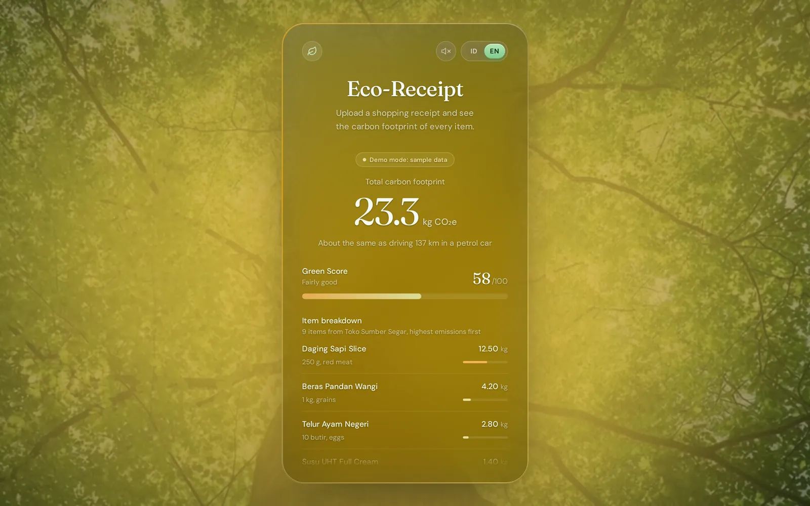
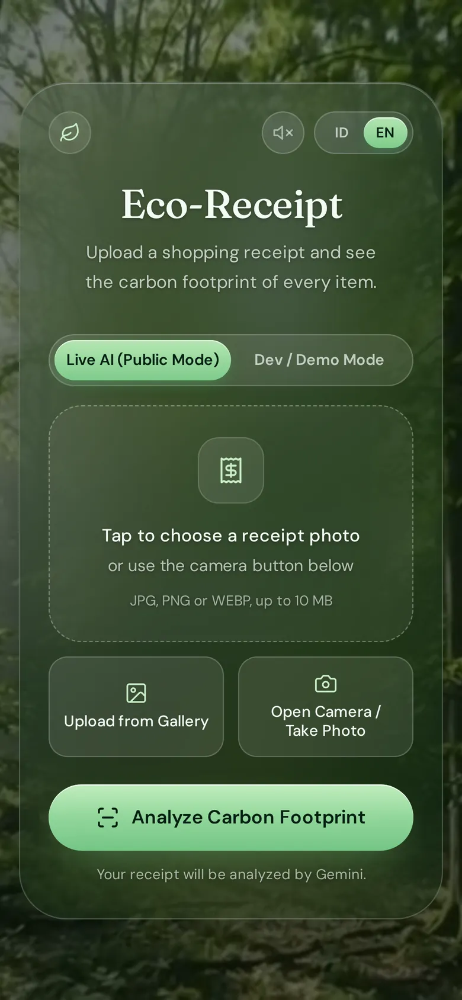
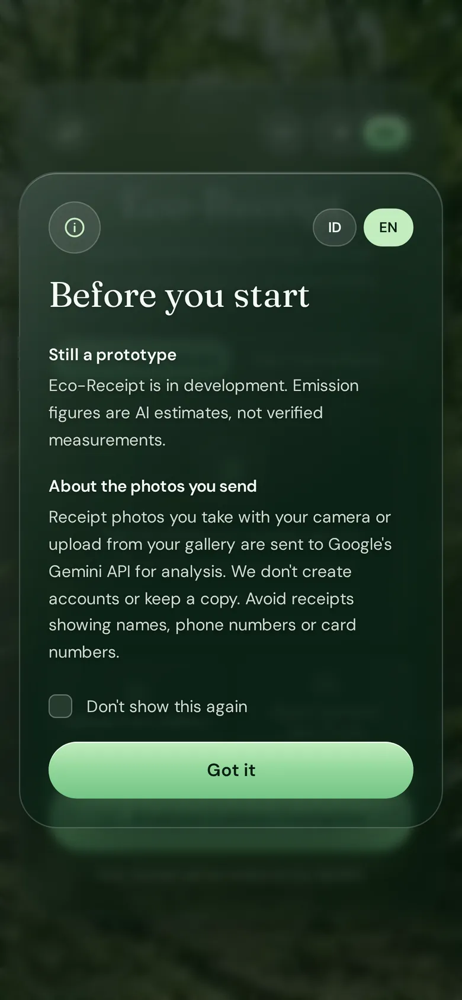
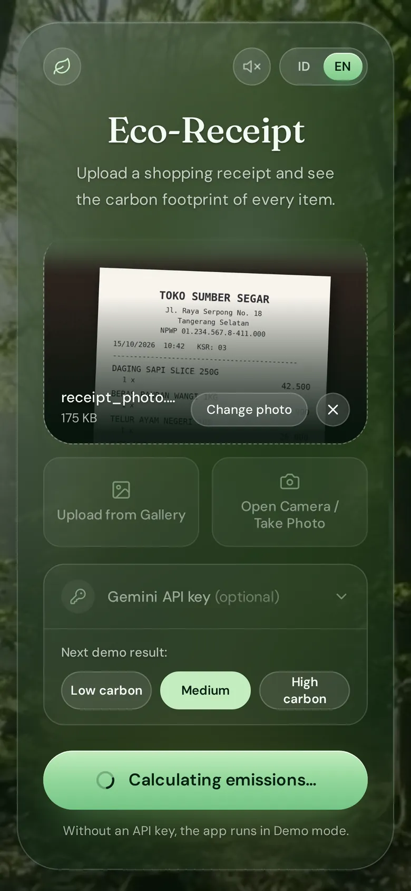
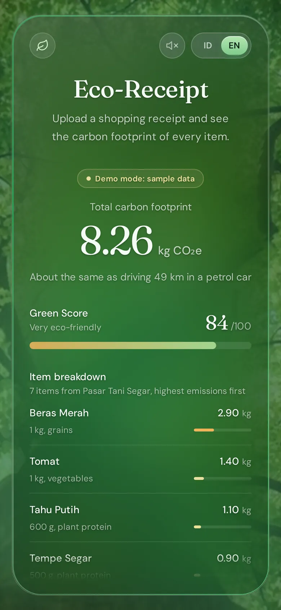
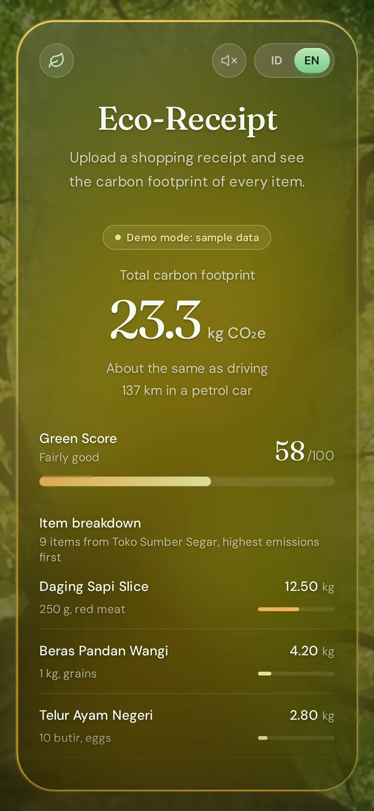
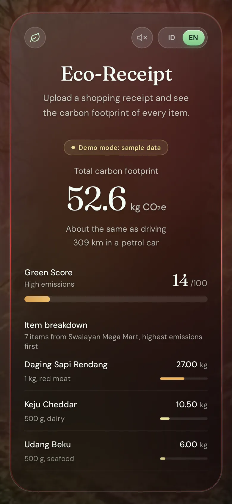
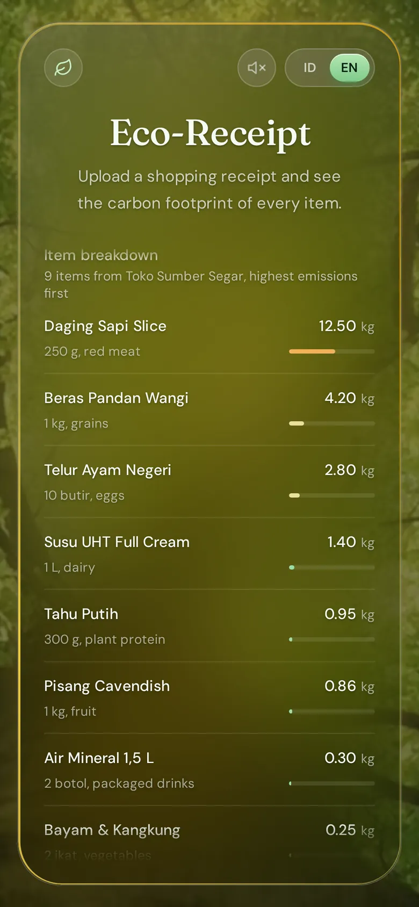
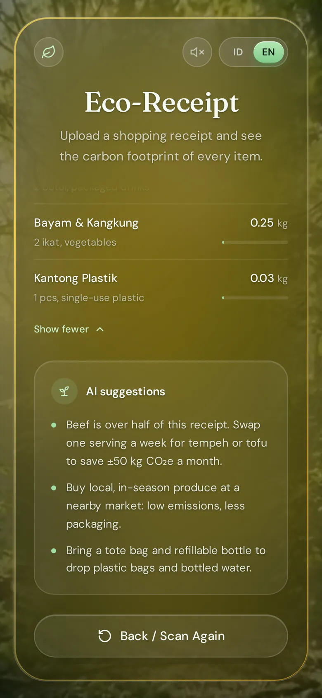
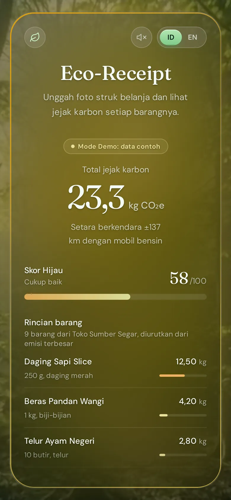
Struk apa pun, banyak bahasa
Gemini membaca teks di foto dalam aksaranya sendiri, jadi struk berbahasa Jepang, Thai atau Jerman melewati alur yang sama dengan struk Indonesia. Nama barang tetap seperti yang tercetak; analisis, Skor Hijau dan sarannya tampil dalam bahasa Inggris atau Indonesia.
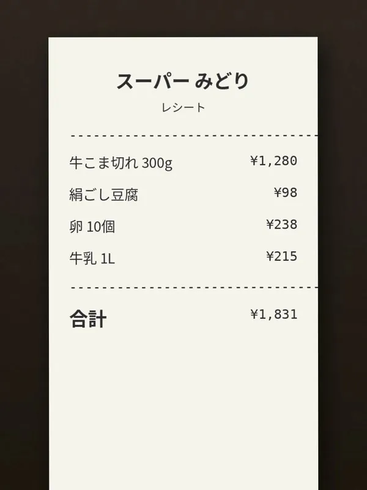
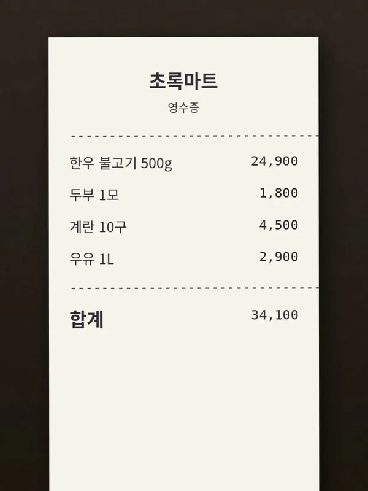
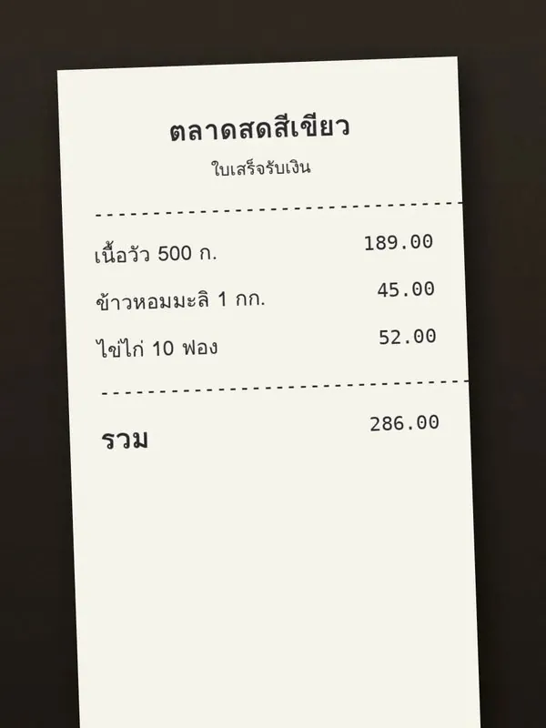
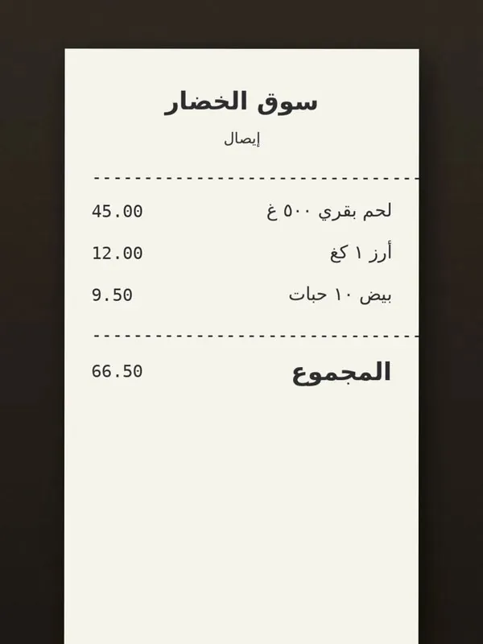
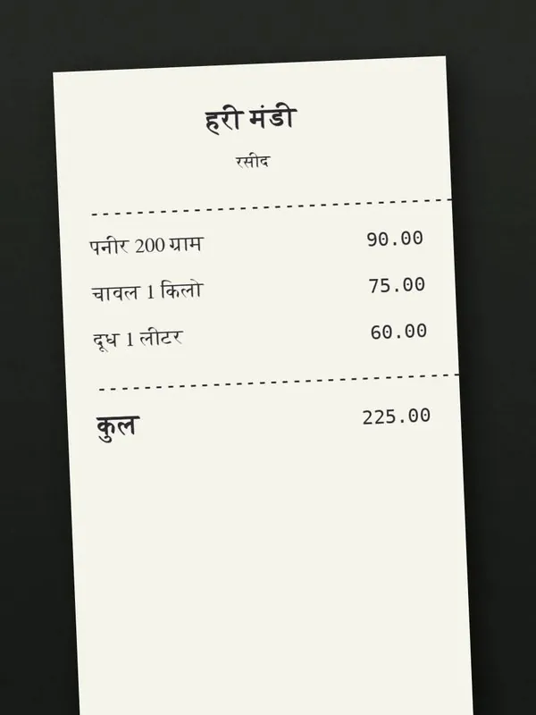
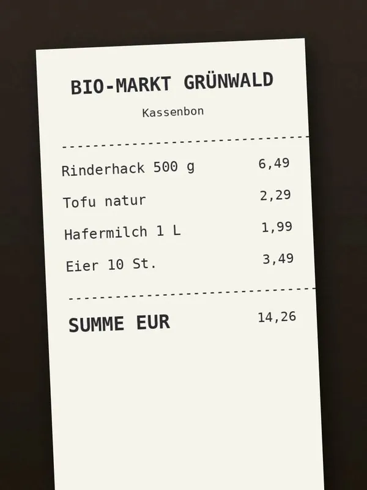
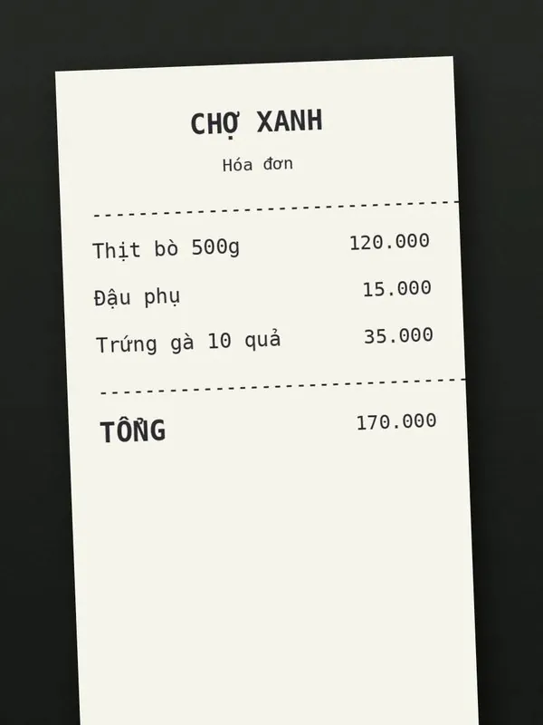
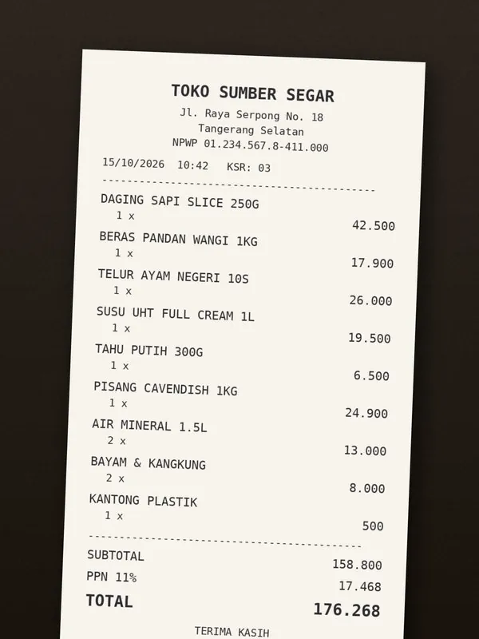
Membaca hasilnya
Angka yang terasa
Total CO₂e dalam huruf serif besar, diterjemahkan ke hal yang akrab: 8,26 kg CO₂e “setara berkendara sekitar 49 km dengan mobil bensin.”
Skor dengan suasana
Skor Hijau dari 100 dengan label sederhana — 84 “Sangat ramah lingkungan”, 58 “Cukup baik”, 14 “Emisi tinggi” — sementara seluruh kartu berubah dari hijau hutan ke kuning lalu merah bara.
Emisi tertinggi lebih dulu
Rincian barang diurutkan dari dampak terbesar, tiap baris dengan berat, kategori dan bar. Sisanya terlipat di balik “Tampilkan barang lainnya”.
Saran yang sesuai belanjaan
Tiga saran AI berdasarkan barang yang dibeli — saat daging sapi mendominasi: ganti satu porsi per minggu dengan tempe atau tahu dan hemat sekitar 50 kg CO₂e per bulan.
Jujur sejak desain
Masih prototipe
Pemberitahuan awal menyatakannya dengan jelas: angka emisi adalah perkiraan AI, bukan pengukuran yang terverifikasi.
Privasi di depan
Foto struk dikirim ke Gemini hanya untuk dianalisis. Tanpa akun, tanpa salinan yang disimpan — dan ada tips untuk menghindari struk yang memuat nama, nomor HP atau nomor kartu.
Data contoh diberi label
Badge “Mode Demo: data contoh” memastikan tidak ada yang mengira hasil demo sebagai hasil asli.
Dibangun dengan
Front end
HTML, CSS dan vanilla JavaScript dengan Tailwind — cukup ringan untuk dimuat cepat di HP mana pun.
Gerak & suara
GSAP untuk transisi, HTML5 canvas untuk asap dan cuaca, Web Audio API untuk soundscape real-time.
AI & hosting
Model multimodal Google Gemini dengan fallback model otomatis, di balik proxy Cloud Run yang kecil; app-nya sendiri berjalan di Firebase Hosting.
Langkah berikutnya
Riwayat dari waktu ke waktu
Akun dan riwayat, supaya pembeli bisa melihat jejak karbonnya turun dari minggu ke minggu.
Struk yang terhubung
Integrasi dengan program loyalitas supermarket dan e-receipt, sehingga tidak perlu foto sama sekali.
Kebiasaan & komunitas
Target mingguan, streak dan tantangan bersama untuk menjaga dorongannya.
Masih MVP — bukti yang berjalan bahwa foto struk bisa menjadi pelajaran kecil yang berguna.
Coba app live-nya
Web app aslinya, langsung di sini. Coba Live AI dengan struk milikmu, atau pindah ke Dev / Demo untuk menjelajahi hasil contoh.
Foto struknya — versi aslinya.
MVP live yang berjalan di Firebase. Baru dimuat di sini saat kamu memintanya.